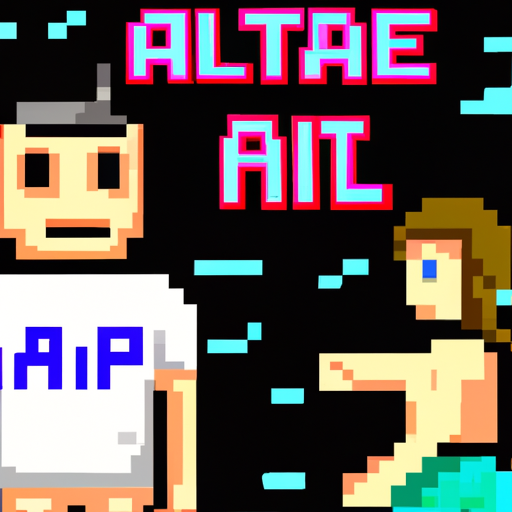

Future of AI and human
Chat GPT (Generative Pre-trained Transformer) is a type of AI technology that has been gaining a lot of traction in the tech industry. This technology allows chatbots to take on more complex conversations and tasks, better simulating human interactions. Chat GPT is powered by massive datasets that have been pre-trained to understand natural language, allowing it to understand and respond to a user’s input more accurately.
As chatbots become more and more advanced, there is a fear that they will replace humans in certain roles. This is especially true in customer service roles, where chatbots are already being used to automate mundane conversations. This can lead to job losses in those industries, although it is not clear how widespread the impact will be.
However, the industrial revolution has already shown us that technological progress can actually create more jobs in the long run, rather than taking them away. AI and Chat GPT are no exception, as they are also creating new opportunities for humans to do more complex and interesting work. For example, AI-powered customer service systems can free up customer service representatives from mundane tasks, allowing them to focus on more complex issues and customer relations.
The future of AI and Chat GPT is uncertain, but it is clear that it will play a major role in the technology industry going forward. It will be up to us, as a society, to make sure that AI is used responsibly and ethically, without taking away jobs from humans. With the right policies and regulations in place, AI and Chat GPT can become powerful tools for improving the quality of life of everyone.
AIと人間の未来
Chat GPT (Generative Pre-trained Transformer) は、テクノロジー業界で大きな注目を集めている AI テクノロジーの一種です。 このテクノロジーにより、チャットボットはより複雑な会話やタスクを実行できるようになり、人間のやり取りをより適切にシミュレートできます。 Chat GPT は、自然言語を理解するために事前にトレーニングされた大規模なデータセットを利用しており、ユーザーの入力をより正確に理解して応答することができます。
チャットボットがますます高度になるにつれて、特定の役割で人間に取って代わる恐れがあります。 これは、日常的な会話を自動化するためにチャットボットがすでに使用されている顧客サービスの役割に特に当てはまります。 これにより、これらの業界で雇用が失われる可能性がありますが、影響がどれほど広がるかは明らかではありません。
しかし、産業革命は、技術の進歩が長期的に見れば、仕事を奪うどころか、実際に多くの仕事を生み出すことができることをすでに示しています。 AI と Chat GPT も例外ではなく、人間がより複雑で興味深い作業を行う新しい機会も生み出しています。 たとえば、AI を活用したカスタマー サービス システムは、カスタマー サービス担当者を平凡なタスクから解放し、より複雑な問題や顧客関係に集中できるようにします。
AI と Chat GPT の将来は不確実ですが、今後のテクノロジー業界で重要な役割を果たすことは明らかです。 人間の仕事を奪うことなく、AI が責任を持って倫理的に使用されるようにするのは、社会としての私たち次第です。 適切なポリシーと規制が整っていれば、AI と Chat GPT は、すべての人の生活の質を向上させるための強力なツールになります。